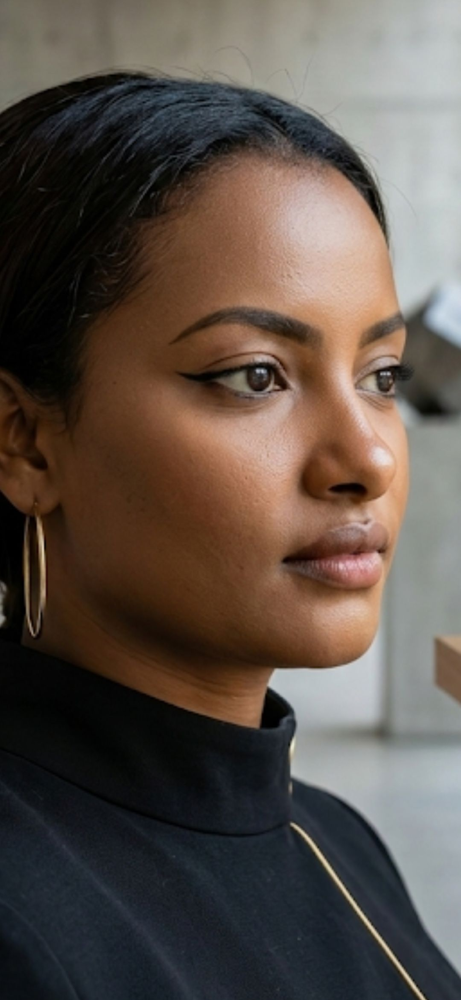

Featured
Structural Engineering Leadership
Professional positioning built around technical excellence, thoughtful problem solving, and real project impact.
Engineering leadership with elegance
Elshaday Eshetu is presented through a premium editorial style website that balances technical credibility, leadership, and a polished public-facing brand identity.


About
Elshaday Eshetu is positioned here as a structural engineer, entrepreneur, and public-facing professional whose digital presence should feel as polished as her ambition. This concept blends technical credibility with warmth, leadership, and visual distinction.
The result is a website that feels more elevated than a standard portfolio while still supporting business introductions, collaborations, speaking opportunities, and long-term personal brand growth.
Highlights
A clean project-led rhythm inspired by premium engineering studio sites, adapted to a more personal and elegant professional profile.
Featured
Professional positioning built around technical excellence, thoughtful problem solving, and real project impact.
Featured
A public voice that blends engineering knowledge, mentorship, and confident communication.
Featured
A modern professional identity that supports partnerships, visibility, and long-term growth.
Featured
A profile strengthened by research and forward-looking ideas in the built environment.
Values
This section centers excellence, women’s leadership, collaboration, and innovation in a tone that feels both refined and purposeful.
Core
Core
Core
Core
Presence
“A strong professional presence with the confidence, clarity, and vision expected from a modern engineering leader.”
Professional Brand Positioning“Her profile communicates technical depth while remaining approachable, polished, and partnership ready.”
Website Strategy Direction“This design presents her as both credible and distinctive, with a clear voice for engineering, leadership, and impact.”
Creative DirectionInsights
These sections can later become real blog posts, talks, achievements, media features, or project updates.
Professional Focus
A personal website can present expertise, trust, and leadership in a way that social profiles alone cannot.
Public Presence
It creates a stronger first impression for clients, institutions, collaborators, and professional opportunities.